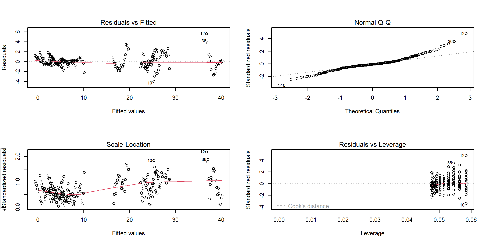

Based on the visualization of suicide analysis, the US national suicide rates have changed a lot through time. And the differences in suicide rates by sex, age can be observed. We will detect the group difference by year, sex, and age by doing regression analysis. Since the suicide trend for males by various age groups is different from the suicide trend for females by various age groups, there might a interaction happening between sex and age. So, interaction term between sex and age group will be considered in the regression analysis.
The model we have:
suicide_df =
read_excel(
"./data/suicide_data.xlsx",
sheet = 1,
col_names = TRUE) %>%
janitor::clean_names() %>%
mutate(
population = (suicide_no / suicide_100k) * 100000,
sex = as.factor(sex),
age = as.factor(age)
)sui_reg = lm (suicide_100k ~ year + sex + age + sex*age, data = suicide_df)After we build our linear model, we will check the several assumptions by using to produce some diagnostic plots visualizing the residual errors.
par(mfrow = c(2, 2))
plot(sui_reg) 
sui_reg %>%
summary() %>%
broom::glance() %>% kbl(
caption = "Key Statistics for Model Performance"
, col.names = c(
"R-squared", "Adj. R-squared"
, "Sigma", "F-statistic", "p-value", "df", "Residual df", "N")
, digits = c( 2, 2, 0, 2, 5, 0, 0, 0)
) %>%
kable_paper("striped", full_width = F) %>%
column_spec(1, bold = T)| R-squared | Adj. R-squared | Sigma | F-statistic | p-value | df | Residual df | N |
|---|---|---|---|---|---|---|---|
| 0.99 | 0.99 | 1 | 1994.27 | 0 | 12 | 239 | 252 |
As F-statistic is 1994.27, df=12, and the p-value is much less than
0.05, so we reject the null hypothesis at the significance level of
0.05. Hence there is a significant relationship between the outcome
suicide rate and the variables (Year,
Sex, Age, and the interaction term
Sex*Age)in the linear regression model of the suicide
dataset.
sui_reg %>%
summary() %>%
broom::tidy() %>%
kbl(
caption = "Effect of Selected Predictors on the US National Suicide Rate, 2000-2020"
, col.names = c("Predictor", "Estimate", "SE", "t-statistic", "p-value"),
digits= 6) %>%
# further map to a more professional-looking table
kable_paper("striped", full_width = F) %>%
# make variable names bold
column_spec(1, bold = T)| Predictor | Estimate | SE | t-statistic | p-value |
|---|---|---|---|---|
| (Intercept) | -345.151190 | 25.419955 | -13.577962 | 0.000000 |
| year | 0.172262 | 0.012646 | 13.621790 | 0.000000 |
| sexmale | 1.100000 | 0.375143 | 2.932218 | 0.003692 |
| age15-24 | 3.061905 | 0.375143 | 8.161975 | 0.000000 |
| age25-44 | 5.490476 | 0.375143 | 14.635704 | 0.000000 |
| age45-64 | 7.304762 | 0.375143 | 19.471960 | 0.000000 |
| age65-74 | 3.809524 | 0.375143 | 10.154868 | 0.000000 |
| age75+ | 2.819048 | 0.375143 | 7.514602 | 0.000000 |
| sexmale:age15-24 | 12.819048 | 0.530532 | 24.162638 | 0.000000 |
| sexmale:age25-44 | 16.452381 | 0.530532 | 31.011113 | 0.000000 |
| sexmale:age45-64 | 17.504762 | 0.530532 | 32.994747 | 0.000000 |
| sexmale:age65-74 | 18.485714 | 0.530532 | 34.843745 | 0.000000 |
| sexmale:age75+ | 33.490476 | 0.530532 | 63.126239 | 0.000000 |
According to the table, all the p-values are quite close to 0, so our
regression indicates that each predictor(Year,
Sex, Age) and the interaction term
(Sex*Age) have the statistically significant relationship
with the suicide rates.
The estimate for predictor Year is 0.17, which means
that when one year increases, the suicide rate will also increase 0.17,
assuming all other variables stay constant. This finding is not totally
consistent with the summary described in our previous visualization
process, probably because the suicide rate trend ripple is not enough
obvious or the variable Year is affected by other unknown
variables.
The estimate for predictor Sexmale is 1.10, which means
that when sex changes from male to female, the value of the suicide rate
will increase 1.10, assuming all other variables stay constant. Among
all the females, the predictor Age45-64 has the largest
value of the estimate, showing that the age group 45-64 has the higher
suicide rates than all other age groups. Among all the males, we need to
combine the estimates with age groups and the interaction terms, and
obtain that the age group 75+ has the higher suicide rates than all
other age groups. And these findings match with our summary from the
foregoing descriptive analyses.